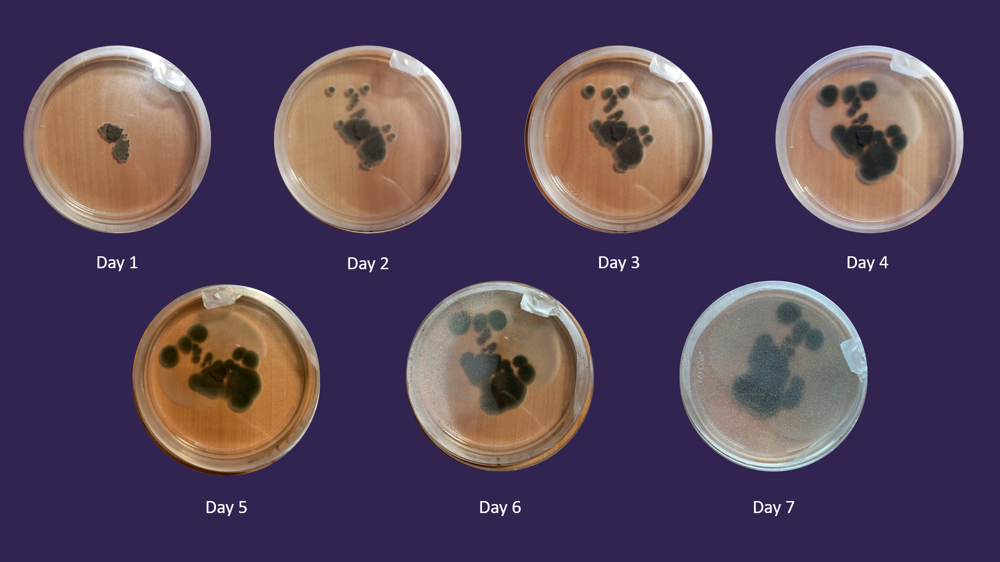
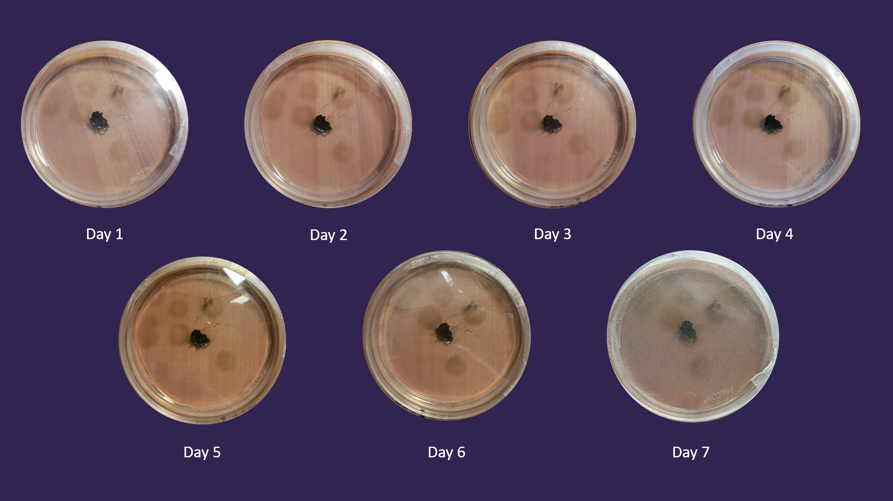
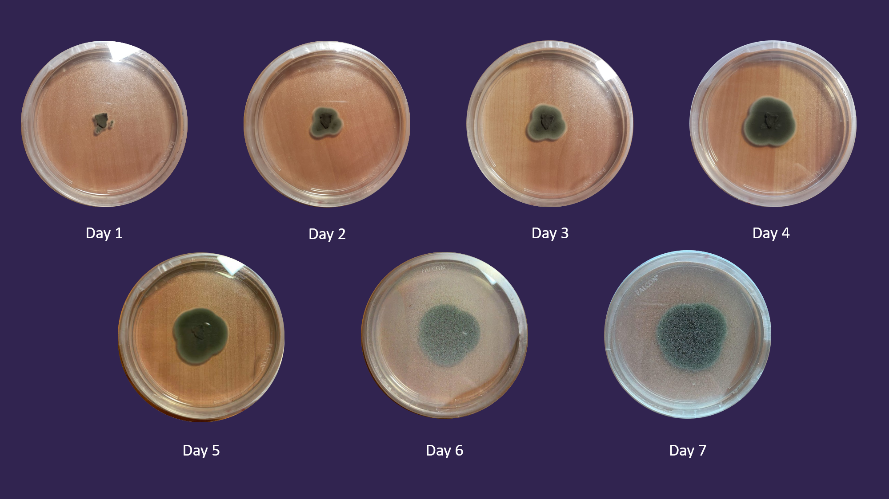

Experiment 2
Description
The goal of this experiment was to see what medium in an agar plate would be the best for the microbe to grow in. For this experiment I had 3 agar plates, one with PDA which was the control plate, one with CV8, and one with a water agar.
Hypothesis
TThe microbe will show the most growth in the plate with PDA.
Results
CV8 Plate:
Water Agar Plate:
PDA Plate (Control):
Conclusion
My hypothesis for this experiment did not end up holding true. I was surprised to see that the microbe in the CV8 plate showed more growth than the control plate. If I was to redo this experiment, I would want to test more media. I believe that the microbes in the control and CV8 plates would continue to grow as observed until space runs out. Based on the results of this experiment, I don't think there would be any growth on the water plate if given more time. We learned from this experiment that the microbe best grows with nutrients, and the nutrients given can vary.